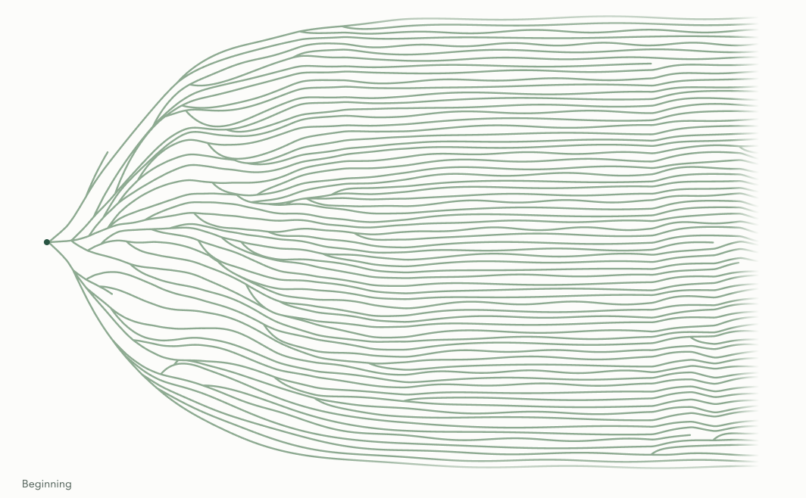
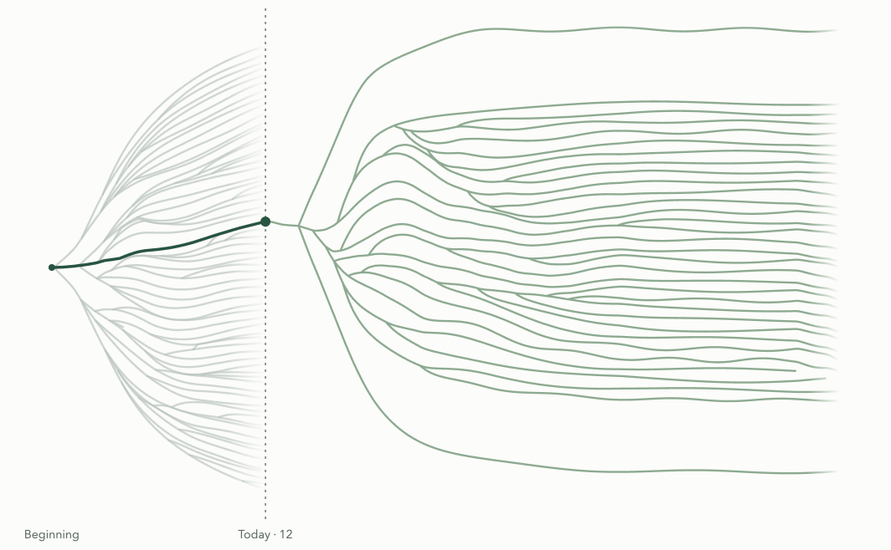

Hover to preview
The nearest reachable branch gains a blue highlight and a named preview. Nothing is committed; moving away restores the map.
A four-scene storyboard for a short, reader-paced lesson. The frames show settled views; notes below show proposed motion. This is a review board, not the live lesson. Map interaction is specified separately below.
Imagine a life as a landscape full of paths. Some lead toward things you already know; others lead toward places you have not imagined. Each branch is a possibility, not a promise.
What happens along one part can change what becomes possible later. Let’s follow Alfredo, a fictional child setting out on a hike with an adult.

The complete path field appears. Nothing needs to be caught in motion.
All possibilities remain visible; the next action is immediately available.
Move into one concrete example, keeping a small life-map reference.
On Alfredo’s first hike, each footstep adds a little distance. Together, the steps carry Alfredo and the adult to a stream for lunch. Rest, water and food help them continue.
At first, Alfredo can follow the adult’s map reading but cannot help plan the route. The adult shows how a bridge and a stream bend match map symbols. Steps add distance during this hike; what Alfredo learns can carry into a later one.

Example: one hikePart of the larger life mapFootsteps join into the route to the stream. Labels appear immediately.
Rest, water, landmarks and the life-map thumbnail remain visible.
Carry the learned landmarks into a later hike.
Across several hikes, Alfredo practises matching landmarks to maps. Later, Alfredo and the adult check an unfamiliar route to a lake. Alfredo can now match the bridge and stream bend, help plan the route and notice if they stray from it.
That is a new possibility for Alfredo: helping to plan, not only following. Enough time and careful packing make the lake practical for the group today. Across hikes, packing sunscreen has also become a familiar part of Alfredo’s check.
The bridge and stream bend now help Alfredo check an unfamiliar section with the adult.
Emphasize the familiar landmarks in the unfamiliar route.
Later hike is the default. First / Later compares the two complete states.
Show what preparation cannot control.
On another day, heavy rain makes part of the trail unsafe. Packing carefully cannot control the weather. A ranger explains what has changed, and the adult helps the group choose a sheltered route. Turning back would also be sensible.
The life map still holds many possibilities. Like rain, a change can alter what comes next; like the ranger and adult, help can reveal another way forward. What is one small action now that could help a future you—even though it cannot promise what will happen?
Rain closes part of the trail. A ranger shares information. The adult helps find another way.
Start with the changed trail, then pull back to the lifetime view.
The closed trail, help and alternative remain together in an inset.
Finish the lesson. Reflection is private; no response is collected.
The life map should invite play. Hover previews; clicking chooses. These reduced fork diagrams isolate the state changes—they are not a replacement for the working path algorithm, and are not interactive controls.
The nearest reachable branch gains a blue highlight and a named preview. Nothing is committed; moving away restores the map.
The connected chosen route becomes dark green. Advance to its next choice; the rest of its possible future stays sage.
Previous choice returns to an earlier fork. Pick another branch there to change this fictional route—not the reader’s real past.
iPad: tap to preview, then Use this path. Keyboard: a short adjacent list offers the same choices. Previous choice / Next choice moves around the map; Resume story returns to the lesson without losing your place. Gray paths explain where they diverged and offer a way to revisit that fork.
Alfredo did not simply remember a route. Alfredo learned how real landmarks can match marks on a map. On the later hike, that understanding let Alfredo help plan and check a section not walked before. A new place can still require adult help and careful checking.
A plan is useful, but it cannot control weather or every other condition. When the trail changes, getting current information and choosing a safer route can be a good response. Reaching a different place—or returning another day—is not a lesser kind of life path.
Does this show how earlier actions change later possibilities—without implying that preparation controls the outcome? Is it clear when we are looking at one hike, several hikes, or the larger life map?
Next: agree the story and interaction states, then implement them using the existing map. Motion, hit testing and live map selection are not implemented in this storyboard.